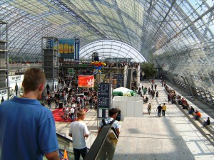
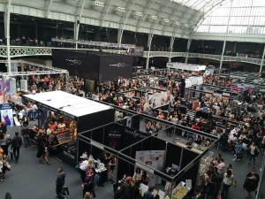

Messeauftritt planen
Worauf kommt es wirklich an?

Die CeBIT 2016 steht vor der Tür und ich freue mich darauf, denn seit zwei Jahren finde ich sie – nach langer trüber Zeit – wieder inspirierend. Nicht nur einige Einladungen, sondern auch die Stimmung, besser gesagt der Stress, bei einem Kunden vor Ort für seinen Messeauftritt haben mir die CeBIT frühzeitig angekündigt.Auch wenn man auf der CeBIT nicht mehr so viel wirklich Neues, Überraschendes sieht, finde ich es einen guten Ort, um:
- sich Hard- und Software intensiver vorführen und erklären zu lassen
- in den Fachvorträgen jede Menge zu lernen
- zum Netzwerken
Und in den letzten beiden Jahren haben mich Anwendungen, von deren Möglichkeiten ich zwar schon gehört hatte, vor Ort dann aber noch einmal anders begeistert.
Betrachtet man die ganze Messebranche lässt sich sagen: insgesamt erfreuen sich Messen nach wie vor großer Beliebtheit bei den Konsumenten, denn: sie bieten Kunden und Interessenten die Möglichkeit sich über neue Produkte zu informieren mit Unternehmen in Kontakt zu treten. Aber auch Firmen profitieren als Aussteller enorm von der Teilnahme an Messen und können ihre Dienstleistungen und Produkte einem breiten Publikum präsentieren.
Wie aber wird ein solcher Auftritt geplant, was muss bei der Organisation eines eigenen Messestands beachtet werden und welche Vorteile ergeben sich für Unternehmen aus einem Messestand?
Als Besucher kann man ja ganz entspannt herumgehen, aber ich weiß, für die Aussteller ist eine solche Messe Stress pur. Und wie ich es auch dieses Jahr wieder beim Kunden gehört habe, man nimmt sich jedes Jahr im Stress vor, nächstes Jahr früher mit der Vorbereitung anzufangen und die Nachbereitung besser zu machen. Daher ein paar grundlegende Gedanken, die einer Messeteilnahme voran gehen sollten:
Welche Vorteile ergeben sich für Unternehmen aus einem Messestand?

Ein Messestand hat zunächst einen bedeutenden Vorteil, der dem Internet fehlt: Der direkte Kontakt zum Kunden. Aussteller und Unternehmen haben durch einen eigenen Stand die Möglichkeit, Interessenten deutlich persönlicher von ihrem Angebot zu überzeugen, als dies je mit anderen Kanälen möglich wäre. So wird nicht nur der Verkauf gefördert und Umsätze erhöht, sondern auch der eigene Bekanntheitsgrad gesteigert. Dies geht einher mit einem weiteren wichtigen positiven Aspekt: Bei einem Messestand wird auf verschiedensten Wegen kommuniziert. Das heißt, es werden nicht nur Neukunden angesprochen, sondern es wird zugleich auch Pressearbeit, Verkaufsförderung und Imagesteigerung betrieben sowie einer proaktiven Kundenbindung und Vertriebsaktivität nachgegangen. Ein breites Spektrum an Möglichkeiten und Chancen also, die kaum ein anderes Marketinginstrument bieten kann. Dabei ist die Auswahl an Messen in Deutschland für nahezu jeden Branche inzwischen riesig.Worauf ist bei der Organisation einer Messe zu achten?
Um die erste Teilnahme an einer Messe zu einem Erfolg zu machen, müssen Unternehmen ihren Auftritt sorgfältig planen und frühzeitig organisieren. Eine gründliche und rechtzeitige (mind. ½ Jahr vorher) Organisation sorgt dabei stets für einen reibungslosen Ablauf.
Wird die Gestaltung und der Aufbau des Messestands sowie die Präsentation der Dienstleistungen und Produkte detailliert und früh genug geplant, macht das Unternehmen einen professionelleren Eindruck bei den Messebesuchern und kann sich voll auf die Gewinnung von Kunden und Präsentation des Unternehmens konzentrieren. Dazu gehört als erster Schritt die Wahl einer für das Unternehmen geeigneten Messe, deren Besucher zur tatsächlichen Zielgruppe gehören. Im Anschluss sollte der Kosten-Nutzen-Faktor sowie die Budgetplanung für den Messeauftritt durchdacht werden – kurz: lohnt sich ein Stand überhaupt? Alle Ausgaben für die Standfläche, den Messestand, die Logistikkosten sowie das Messepersonal müssen dem Gewinn an Neukunden und dem sonstigen Nutzen gegenübergestellt werden. Nur so können Unternehmen bestimmen, ob sich die Ausgaben lohnen werden.
Klare Ziele definieren lohnt sich!
In der Planungsphase sollten auch die Ziele eines Messeauftritts klar definiert werden:
- Was will der Betrieb mit dem Messestand erreichen?
- Welche Kunden wollen angesprochen werden?
- Was genau soll der Stand präsentieren und wie kann man die Interessenten auch nach der Messe noch erreichen?
Auch sollten zum Beispiel Visitenkarten, Flyer und anderes Informationsmaterial rechtzeitig vor dem Messeauftritt vorbereitet werden, die den Interessenten und potenziellen Kunden überreicht werden können. Denken Sie dabei auch an die Mitarbeiter, die sonst üblicherweise nicht im Außendienst sind. Außerdem müssen die eigenen Mitarbeiter eingeteilt und professionell auf die Messe vorbereitet werden – jeder sollte klar definierte Aufgaben zugeteilt bekommen. Darüber hinaus müssen die Unternehmen auch dafür sorgen, dass die Technik einwandfrei funktioniert und damit ist heutzutage nicht nur Strom für Licht und Catering gemeint, sondern Internet und Telefonverbindung. Hier gilt es also das entsprechende Messebau-Unternehmen genau über die eigenen Bedürfnisse zu informieren.
Übersicht – Grundsätzlich sollten folgende Punkte beachtet werden:
– Wahl der passenden Messe als oberste Priorität
– Klare Zielsetzungen für den Messeauftritt, um messbare Erfolge zu erhalten
– Kosten-Nutzen-Kalkulation rechtzeitig und ganzheitlich kalkulieren
– Gestaltung und Herstellung des Messestands planen
– Organisation der Strom- und Wasserversorgung sicherstellen
– Messepersonal einplanen und gezielt schulen
Das Fazit
Ein eigener Messeauftritt erfordert eine ausführliche Planung und Organisation: Diese sind ausschlaggebend für den Erfolg und den Nutzen, den das Unternehmen aus der Messe zieht. Die Vorbereitungsphase sollte dabei möglichst früh beginnen, um ausreichend Zeit für Änderungen und eventuelle Problemlösungen einplanen zu können – so wird der Auftritt des Unternehmens zum Erfolg!
Weitere Artikel

Puffer sichern Flow
Es wird allerhöchste Zeit, sich von der Idee, dass nur wer am Limit arbeitet, effizient sei, zu verabschieden. Unter Volllast, ganz ohne Puffer zu arbeiten ist eine „gute“ Voraussetzung für Unzuverlässigkeit, Fehler …

Die Kollaboration in einem internationalen Team organisieren
Für erfolgreiche Kollaboration im Team sind viele Bausteine nötig. Natürlich müssen alle das Ziel kennen, der Teamspirit muss stimmen, aber es muss auch die tägliche Zusammenarbeit im Team „flutschen“. Das heißt, die …